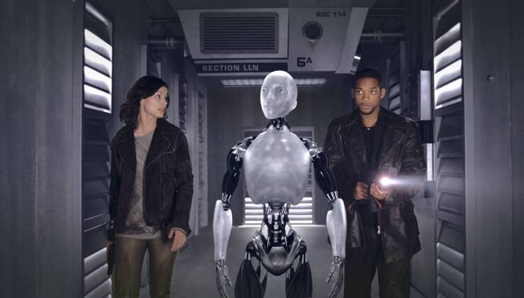

C1 — Intro
Introduction & Intelligent Agents
How is AI received?
Sci-Fi
The perception of AI changed over the decades. This is well reflected in Sci-Fi Movies, e.g.
- R2D2 in Star Wars
- The Terminator
- Agent Smith in the Matrix
- Sonny in I,Robot
- Wall·E
- etc.



Reality
Will the fictions become reality? We will se. In any case, the intellectual frontiers of AI are wide open. The subfields span from artificial general intelligence (learning, reasoning, perception, etc.) to specific fields (e.g., translating, playing go) (Russel and Norvig 2022).
“I believe it’s going to change the world more than anything in the history of mankind — even more than electricity.” —Kai-Fu Lee
“The pace of progress in artificial intelligence is incredibly fast. Unless you have direct exposure to groups like Deepmind, you have no idea how fast—it is growing at a pace close to exponential. The risk of something seriously dangerous happening is in the five-year timeframe. 10 years at most.” —Elon Musk
“Forget artificial intelligence - in the brave new world of big data, it’s artificial idiocy we should be looking out for.” —Tom Chatfield
What is AI?
Towards a definition of AI
AI is the science of making machines to
- think (though processes and reasoning)
- like people
- rationally
- and to act (behavior)
- like people
- rationally (Russel and Norvig 2022)
The term rational is used here in a very specific, technical way:
- Rational: maximally achieving pre-defined goals
- Rationality only concerns what decisions are made (not the thought process behind them)
- Goals are expressed in terms of the utility of outcomes
- Being rational means maximizing your expected utility
Acting humanly
The Turing Test approach
The Turing Test (Turing 1950) tests if a computer has the ability to mimic peoples’ behavior. To pass the test, it would need following capabilities:
- natural language processing (communicate)
- knowledge representation (store information)
- automated reasoning (answer questions, draw new conclusions)
- machine learning (adapt to new circumstances)
Want to do a Turing Test? Play “Bot or Not”
The Turing Test (Turing 1950) was designed as a tought experiment that would sidestep the philosophical vagueness of the question “Can a machine think?” A computer passes the test if a human interrogator, after posing some written questions, cannot tell wether the written responses come from a person or from a computer (Russel and Norvig 2022).
The Total Turing Test additionally requires interaction with objects and people in the real world. This also requires computer vision and robotic capabilities.
Thinking humanly
The cognitive modelling approach
Cognitive science is the study of the human brain and its processes — it examines how the human brain may be functioning. Cognitive science requires analytical observation and experimentation. We can learn about human thought in three ways (Russel and Norvig 2022):
- introspection (trying to catch our own thoughts)
- experiments (observing a person in action)
- brain imaging (observing the brain in action)
Cognitive science is about making computers solve complex problems similar to how humans solve problems. Cognitive computing tries to replicate how humans would solve problems, while AI is not bound to human cognitive processes.
Thinking rationally
The laws of thought approach
The “laws of thought” refer to fundamental axiomatic rules upon which rational discorse itself is often considered to be based.
Socrates is a man and all men are mortal,
thus, it can be concluded that Socrates is mortal
-Aristotle
In principle, computers have been able to solve any solvable problem (i.e., make correct inferences), as long as
- there are statements about any objects in the world,
- statements about the relations among them, and
- sufficient computing power available
These laws of thought were supposed to govern the operation of the mind; the studies initiated the field called logic. However, human decisions are not always mathematically perfect or logical.
Logic as conventionally understood requires knowledge of the world that is certain. As this condition is seldom achieved, the theory of probability fills this gap. Probability allows for rigorous reasoning with uncertain information. (Russel and Norvig 2022)
Acting rationally
The rational agent approach
An agent is something that acts, an rational agent is one that acts so as to achieve the best coutcome (i.e., does the right thing), or, when there is uncertainty, the best expected outcome (i.e., does the appropriate thing).
What counts as the best thing is defined by the objective that we provide to the agent (Russel and Norvig 2022).
The approach goes beyond the “laws of thought” approach as it involves actions based on
- inference (deducing that a given action is the best and then to act on this conclusion) and
- on other mechanisms such as reflex (when speed is more sucessful than careful deliberation that takes some time)
Russel and Norvig (2022) call the approach where the primary definition of success is getting better and better at achieving rigid human-specified goals the standard model of AI research. This standard model prevails not only in AI, “but also in control theory, where a controller minimizes a cost funciton; in operations research, where a policy maximizes a sum of rewards; in statistics, where a decision rule minimizes a loss funciton; and in economics, where a decision maker maximizes utility or some measure of social welfare” (p. 22).
They also criticize the standard model because it is increasingly difficult to specify the goal completely and correctly (e.g., autonomous driving involves multiple goals such as reaching the goal safely, where a strict definition of safety requires staying in the garage because driving on the road has a risk of injury due to myriad factors; how should the trade-off between reaching the goal and taking a risk of injury be made? There are so many questions that are difficult to answer a priori). Mis-specified goals most likely do not reflect what human designers intend, e.g., by not taking into account human values that are not included in the goals.
Any issues with that concept?
Benificial machines
Machines that are provably beneficial to humans
According to Russel and Norvig (2022) Two refinements to the standard model of AI are needed:
- The ability of any agent to choose rational actions is constrained by the computational untractability of doing so
- An intelligent agent should not pursue a definite object, it should pursue objectives that benefit humans, while being uncertain as to what they are
When a machine knows that it does not know the entire objective, it has an incentive to act cautiously, to ask permission, to learn more about our preferences through observation, and to submit to human control.